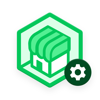

본문 바로 가기
전체 메뉴
길잡이 소개
소식
자료실
함께하기
SNS
길잡이 소개
길잡이의 시작
조직도
소식
공지사항
행사 신청
자료실
책과 발간물
활동 기록
함께하기
교육·협업 문의
조합원 가입
후원 안내
SNS
인스타그램
네이버 카페
카카오톡 채널

네이버스토어
준비 중
교육·협업 문의
관리자 로그인
게시글 관리
아이디
초기 설정 코드
비밀번호
로그인
로그아웃
메인에서 행사 슬라이드 편집
이 브라우저의 기존 작업 가져오기
게시글을 찾을 수 없습니다.
게시판
필수
활동 기록
행사 신청
책과 발간물
공지사항
제목
필수
태그
필수
활동 날짜
필수
목록에 보일 요약
선택
본문
필수
사진
선택
PNG·JPG·WebP, 원본 최대 20MB
선택한 이미지 빼기
이미지 주소
선택
저장된 이미지 삭제
이미지 설명
선택
첨부파일
선택
문서 파일 선택
PDF·한글·Office·TXT·ZIP, 파일당 최대 30MB
선택한 파일 빼기
모집 정보
행사 시간
선택
장소
필수
대상
필수
신청 마감일
필수
신청 링크
선택
발간 정보
발행처
필수
열람 안내
선택
열람 파일 주소
선택
미리보기 주소
선택
저장
게시판으로 돌아가기
글 삭제
게시글을 삭제할까요?
취소
삭제